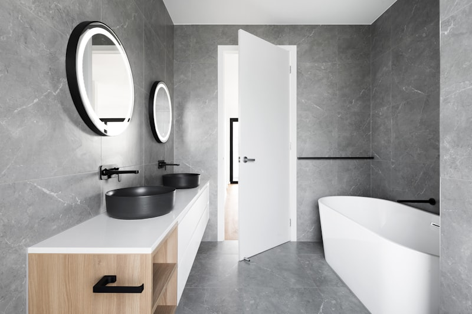

Мебель для ванной комнаты: как выбрать идеальный вариант?

Мебель для ванной комнаты — это не просто декор, а функциональная необходимость. Правильно подобранная мебель решает проблему хранения, создаёт комфорт и служит годами даже в условиях повышенной влажности. Но как не ошибиться с выбором среди сотен предложений на рынке?
В этом гиде разберём все важные аспекты: от материалов и конструкций до размеров и стилей. А участницы нашего клуба поделятся своим опытом — что реально работает, а что оказалось разочарованием.
Виды мебели для ванной комнаты
1. Тумба под раковину
Назначение: Скрывает коммуникации, обеспечивает место для хранения.
Типы:
- Напольная — классический вариант, устойчивая, вместительная
- Подвесная — современный дизайн, визуально увеличивает пространство, легко мыть пол
- Угловая — для маленьких ванных, использует мёртвую зону
Размеры: Ширина 40-120 см (стандарт 60-80 см)
2. Пенал
Назначение: Вертикальное хранение (полотенца, бытовая химия, косметика).
Типы:
- Напольный — устойчивый, вместительный
- Подвесной — экономит пространство на полу
- Угловой — для узких помещений
Высота: 120-200 см
Ширина: 30-50 см
3. Навесной шкафчик
Назначение: Хранение над раковиной или стиральной машиной.
Варианты:
- Зеркальный шкаф — два в одном (зеркало + хранение)
- Открытые полки — для декора и часто используемых вещей
- Закрытый шкаф — скрывает содержимое
4. Полки
Назначение: Дополнительное открытое хранение.
Типы:
- Настенные — над унитазом, у зеркала, в душе
- Угловые — используют углы
- Многоярусные стойки — от пола до потолка
5. Комплект мебели
Что входит: Тумба + зеркало (или зеркальный шкаф) + пенал (опционально).
Плюсы: Единый стиль, продуманная эргономика, часто выгоднее покупки по отдельности.
Минусы: Не всегда подходит по размерам конкретной ванной.
Материалы: что выбрать для влажной среды
1. МДФ с влагостойкой обработкой
Плюсы:
- Средняя цена (тумба от 5 000 руб.)
- Разнообразие дизайнов и цветов
- Хорошая влагостойкость при качественной обработке
Минусы:
- Боится прямого контакта с водой в течение длительного времени
- Срок службы 5-7 лет
- Может вздуться на торцах, если обработка некачественная
Важно: Все торцы должны быть закрыты кромкой! Проверьте внутренние края.
2. Массив дерева (влагостойкие породы)
Породы: Тик, дуб, лиственница, бамбук.
Плюсы:
- Экологичность
- Долговечность (15-20 лет при правильном уходе)
- Престижный вид
- Можно отреставрировать
Минусы:
- Дорого (тумба от 30 000 руб.)
- Требует регулярной обработки маслом или воском
- Тяжёлая
💬 Выбираете мебель для ванной?
В нашем клубе участницы делятся опытом использования разных материалов, рассказывают о долговечности и практичности. Узнайте, какая мебель действительно выдерживает влажность!
Посмотреть отзывы →3. Пластик (ПВХ)
Плюсы:
- Не боится воды совершенно
- Бюджетно (от 3 000 руб.)
- Лёгкий вес
- Легко моется
Минусы:
- Внешний вид уступает дереву и МДФ
- Царапается
- Недолговечность (3-5 лет)
- Может выгорать на солнце
4. Стекло и металл
Применение: Полки, каркасы стеллажей, столешницы.
Плюсы:
- Не боятся влаги
- Современный стиль
- Визуально легко
Минусы:
- Стекло хрупкое, видны разводы
- Металл (кроме нержавейки) может ржаветь
- Дорого
5. Искусственный камень
Применение: Столешницы под раковину.
Плюсы:
- Абсолютная влагостойкость
- Бесшовная интеграция с раковиной
- Можно восстановить царапины
- Премиальный вид
Минусы:
- Очень дорого (от 20 000 руб. за столешницу)
- Боится ударов
На что обратить внимание при выборе
1. Размеры и планировка
Перед покупкой:
- Измерьте ширину, глубину и высоту доступного пространства
- Учтите открывание дверей и ящиков (чтобы не билось об унитаз или стену)
- Подумайте о свободе передвижения (минимум 70 см между мебелью)
2. Тип открывания
Распашные дверцы:
- Плюсы: дешевле, классика, надёжность
- Минусы: нужно место для открывания, неудобно доставать из глубины
Выдвижные ящики:
- Плюсы: удобно, видно всё содержимое, эргономично
- Минусы: дороже, может заедать механизм
Рекомендация: Комбинируйте — верхние ящики для мелочей, нижний отсек с дверцей для высоких флаконов.
3. Фурнитура
От неё зависит долговечность мебели!
- Петли: Выбирайте доводчики (плавное закрывание)
- Направляющие для ящиков: Металлические с доводчиками (роликовые дешевле, но быстрее изнашиваются)
- Ручки: Из нержавейки или хрома (не ржавеют)
4. Ножки или подвес
Напольная мебель на ножках:
- Регулируемые ножки компенсируют неровный пол
- Высота ножек минимум 10 см (чтобы не стоять в воде при протечке)
Подвесная мебель:
- Проверьте надёжность стены (гипсокартон не подходит без усиления)
- Крепёж должен быть мощным (анкеры, а не дюбели)
5. Защита от влаги
Обязательно проверьте:
- Все торцы закрыты кромкой (особенно внутренние)
- Дно тумбы не касается пола (ножки приподнимают)
- Задняя стенка не из картона (должна быть влагостойкая ДВП или пластик)
- Петли и ручки из нержавеющих материалов
Стили мебели для ванной
1. Современный (минимализм)
Признаки: Гладкие фасады без ручек, встроенная подсветка, подвесные конструкции, лаконичность.
Материалы: МДФ с глянцевым покрытием, стекло, металл.
Цвета: Белый, серый, чёрный, бетон.
2. Классический
Признаки: Филёнчатые фасады, декоративные ручки, резьба, молдинги.
Материалы: Массив дерева или МДФ с имитацией.
Цвета: Белый, бежевый, коричневый, слоновая кость.
3. Скандинавский
Признаки: Простота, натуральные материалы, светлые тона, открытые полки.
Материалы: Светлое дерево (берёза, сосна), белый МДФ.
Цвета: Белый, светло-серый, натуральное дерево.
4. Лофт
Признаки: Грубые текстуры, открытые коммуникации, металлические элементы.
Материалы: Дерево с эффектом старения, металл, бетон.
Цвета: Серый, чёрный, коричневый, металлик.
5. Прованс
Признаки: Романтичность, патина, светлые пастельные тона, декор.
Материалы: Массив с покраской, МДФ.
Цвета: Белый, мятный, лавандовый, бежевый.
🎨 Не можете определиться со стилем?
В клубе участницы показывают фотографии своих ванных комнат, обсуждают удачные сочетания и делятся идеями. Найдите вдохновение!
Посмотреть примеры →Частые ошибки при выборе мебели
1. Выбор по картинке без учёта размеров
Проблема: Мебель не влезает или оставляет слишком много/мало места.
Решение: Измерьте пространство до сантиметра! Нарисуйте план сверху.
2. Покупка обычной (не влагостойкой) мебели
Проблема: Через полгода МДФ вздувается, петли ржавеют.
Решение: Покупайте только мебель с маркировкой «для ванной комнаты».
3. Игнорирование вентиляции
Проблема: Даже влагостойкая мебель портится без вентиляции.
Решение: Установите вытяжной вентилятор, проветривайте после душа, не закрывайте дверцы наглухо (оставьте щель для циркуляции воздуха).
4. Экономия на фурнитуре
Проблема: Дешёвые петли и направляющие ломаются через год.
Решение: Уточняйте производителя фурнитуры (Blum, Hettich — надёжные).
5. Несочетаемость со стилем ванной
Проблема: Купили красивую мебель, но она не подходит по стилю к плитке и сантехнике.
Решение: Планируйте дизайн ванной целиком перед покупкой мебели.
Рекомендации по брендам
Бюджетный сегмент (до 15 000 руб.)
- Акватон — российский бренд, приемлемое качество
- Sanflor — неплохое соотношение цена/качество
- Triton — базовые модели
Средний сегмент (15 000 - 40 000 руб.)
- Roca — испанский бренд, хорошее качество
- Jacob Delafon — французский дизайн
- AM PM — немецкое качество по адекватной цене
Премиум (от 40 000 руб.)
- Villeroy & Boch — немецкая классика
- Duravit — премиальный дизайн
- Laufen — швейцарское качество
Как ухаживать за мебелью в ванной
- Вытирайте брызги сразу — не давайте воде застаиваться на поверхности
- Проветривайте после душа — открывайте дверь, включайте вентилятор
- Не используйте абразивы — царапают защитное покрытие
- Раз в месяц протирайте восковым средством — для деревянной мебели
- Проверяйте фурнитуру — подтягивайте ослабшие винты, смазывайте петли
- Не перегружайте полки — соблюдайте допустимый вес
Заключение
Выбор мебели для ванной — это компромисс между красотой, функциональностью и бюджетом. Главные правила:
- Только влагостойкие материалы с закрытыми торцами
- Качественная фурнитура из нержавейки
- Размеры должны соответствовать вашей ванной
- Стиль должен сочетаться с общим интерьером
- Хорошая вентиляция продлевает срок службы любой мебели
Не гонитесь за дешевизной — качественная мебель прослужит 10-15 лет, а замена обычной каждые 3 года обойдётся дороже. Инвестируйте в надёжность!
📸 Примеры из реальных проектов

Подвесная тумба с декоративной перфорацией

Деревянная тумба на чёрных металлических ножках